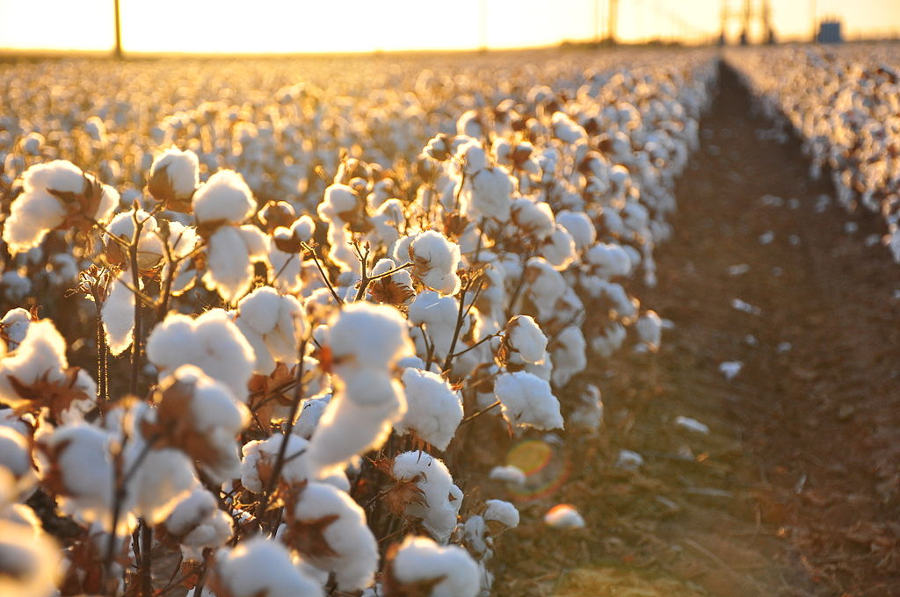

COTTON CROP

Cotton can grow in almost all well drained soils. However, suitable soils for achieving high yields are considered the deep well drained sandy loam soils, with enough clay, organic matter
ANALYSE